Красить волосы в домашних условиях - не такая простая задача, как кажется на первый взгляд. Поэтому, недолго думая о том, стоит ли делить информацию на отдельные посты, я решила собрать в одном месте важную информацию, с которой желательно было бы ознакомится прежде, чем вы решитесь изменить цвет ваших волос. Данный материал будет полезен и тем, кто доверяет процедуру окрашивания специалистам.
Убедиться, что у Вас нет аллергии на краску
Чаще всего аллергеном является фенилендиамин (p-Phenylenediamine), который содержится почти во всех красках. Аллергия проявляется не сразу, имеет накопительный эффект: может возникнуть спустя 2-3 суток после теста или после нескольких процессов окрашивания. Также может наблюдаться у чувствительных к сульфаниламидам (стрептоцид, бисептол). Степень опасности варьируется от умеренной до смертельной. Также аллергенами могут быть: 6-hydroxyindole, Isatin и p-Methylaminophenol.
Поэтому ВСЕГДА выполняйте тест по инструкции, приложенной к каждой коробке с краской, даже если предыдущие тесты не показали видимого результата!!! Хочу отметить, что часто в салонах тест не делают, поэтому требуйте его обязательного проведения за 48-72 часов до окрашивания!
Список брендов и натуральных красителей, в которых нет фенилендиамина:
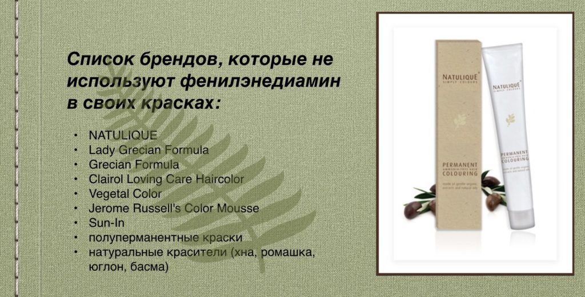
Узнать какое у Вас состояние волос
-
Изучите кончики волос. Возьмите небольшую прядь волос и поднесите ее к источнику света, для того чтобы проверить нет ли посеченных волосков, похожих на вилочки. Если есть, то вашим волосам не хватает питания и увлажнения, но, если основная часть волос выглядит достаточно ухоженной, их все еще можно спасти. Посеченные волосы заметны невооруженным взглядом: пряди выглядят неухоженными, неопрятными и лишенными жизненной силы.
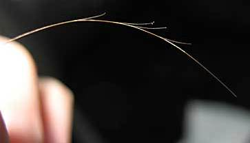
-
Изучите свою расческу. Расчески, на которых нет волосков, существуют только в магазине в запакованном виде. Во всех других ситуациях избежать выпадения просто невозможно. Трихологи доказали, что, если за сутки у вас выпадает 100 волосков, - это норма. Но они должны иметь основание, а не быть обломанными. Возьмите волосинки с расчески и присмотритесь: если с одной стороны есть небольшая точечка, а длина волоска приблизительно такая, как основная часть вашей шевелюры, значит, все нормально и переживать не стоит. Но, если вы заметили, что на расческе огромное количество мелких кусочков, клубков и обломков - срочно необходимо начинать комплексное лечение. Причиной такой проблемы является частое окрашивание или обесцвечивание, использование плоек и фена. Если волосинки на расчески с обеих сторон имеют тупые концы, значит, они сильно повреждены.
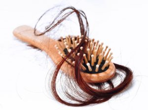
-
Проведите эксперимент с погружением. Возьмите небольшую посудину и налейте в нее холодную воду. Погрузите в жидкость несколько крупных прядей и понаблюдайте. Здоровые крепкие волосы не будут слишком быстро набирать в себя влагу, поэтому они всплывут на поверхность. Если же ваши волосы сухие и пористые, они достаточно быстро опустятся на дно емкости. Чтоб избежать такой неприятности, необходимо регулярно делать маски и использовать качественные профессиональные шампуни.
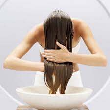
-
Обратите внимание на внешний вид волос и потрогайте их пальцами. Здоровые волосы имеют выраженный блеск, который особенно заметный при ярком искусственном освещении или на солнце. Обратите внимание на наличие такого блеска, чтоб получить представление о состоянии ваших волос. Если ваши пряди выглядят матовыми и тусклыми, значит, им не хватает питания. Такое может происходить из-за отсутствия в вашем рационе полезных продуктов, частого окрашивания агрессивными красителями или злоупотребления плойкой, феном или термобигудями. Если прикоснуться к здоровым волосам, вы ощутите мягкость и гладкость, а если это будут поврежденные волосы, вы ощутите жесткость, сухость и шероховатости. Некоторые женщины жалуются на то, что у них много прикорневых волос, но тут есть два варианта: либо эти волосы новые, либо это остатки обломившихся волос. Для того, чтоб определить это, просто посмотрите на их концы: если они острые - это новые здоровые волосы, а если ровные, как бы обрезанные, - это обломанные.
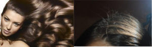
-
Проследите, как ваши волосы поддаются укладке. Попробуйте их накрутить или выровнять. Здоровые волосы быстро принимают форму, которую вы стремитесь создать. А поврежденные требуют значительно больше времени, а порой даже не получается создать прическу, которая вам нравится.
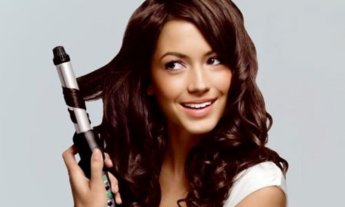
Определить натуральный или текущий уровень светлости волос
То есть на сколько ваши волосы светлые или темные (никаких оттенков тут не подразумевается). В этом вопросе Вам может помочь вот такая шкала, которая является международной (The International Colour Chart (ICC)), запомните свой номер (далее объясню почему):
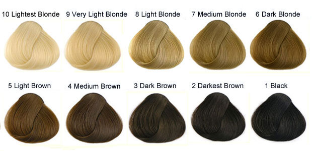
1 - черный
2 - очень темный коричневый
3 - темно-коричневый
4 - средний коричневый
5 - светло-коричневый
6 - темный блонд
7 - средний блонд
8 - светлый блонд
9 - очень светлый блонд
10 - бледный (обесцвеченный) блонд
11-12 - седые или волосы как у альбиносов.
Если Вы все же не уверены какой у вас уровень светлости, то можно уточнить в салоне/парикмахерской; там есть специальные книжечки с локонами разных натуральных цветов. Типа того:
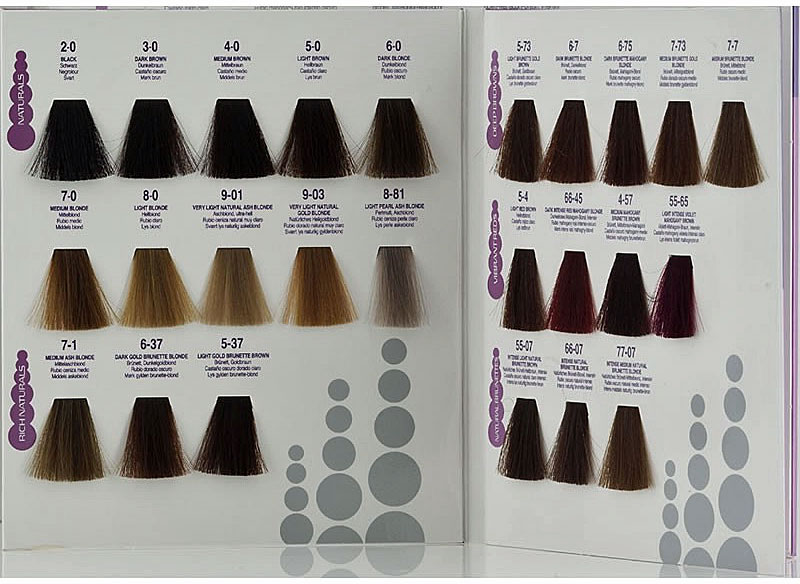
Возможно, вот такие изображения будут вам полезны. Это шкала Фишера-Заллера (обратите внимание: везде используется одна и та же скрепляющая локоны нить: на локоне А нить кажется очень тёмной, на локоне Y достаточно светлой, а на локоне N нить совпадает по уровню светлости, говоря нам о том, что этот локон среднего уровня светлости):
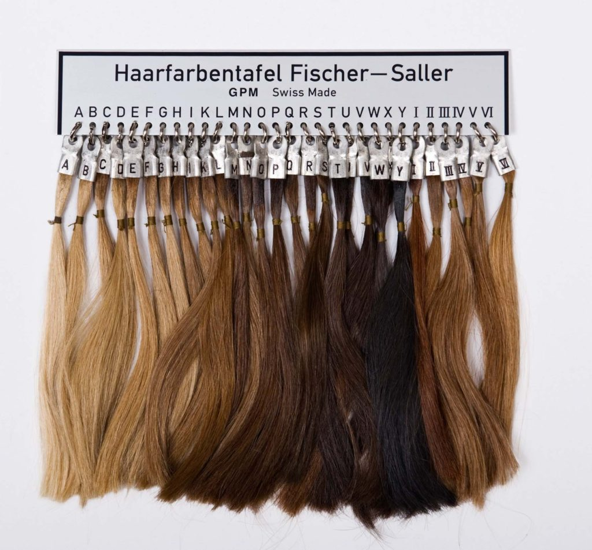
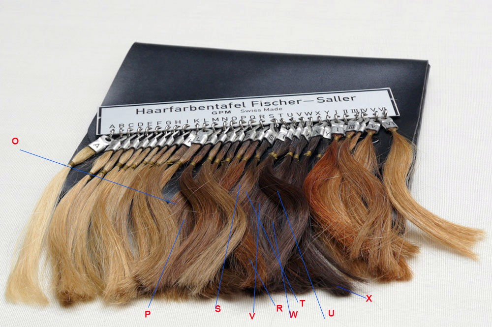
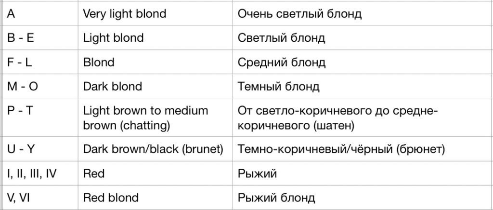
Как выбрать краску и определить, какой результат вы получите, если нанесете краску на ранее окрашенные волосы?
Вы убедились в том, что у вас нет аллергии, ваши волосы в удовлетворительном состоянии и заодно определили свой номер по шкале светлости. Ну что, пора идти покупать краску? Но и на этом этапе есть свои нюансы:
Как выбрать нужный оттенок?
Бывало ли у вас так, что вы шли в магазин за одной краской, а возвращались с другим оттенком? Или вот настроение такое, что “перемен требуют наши сердца”, и вы уже в магазине берете краску, которая вам нравится, и решительно красите волосы тем же вечером? Каков был результат? Получался ли желаемый оттенок?
Сама я ратую за более рациональный подход к окрашиванию волос, поэтому пытаюсь вам дать больше подсказок.
Итак, сначала, мы смотрим, конечно же, на картинку, она полезна в случае, если мы, например, ищем рыжий, поэтому мы не будем искать его среди “баклажанов”. Но больше информации нам даст код, который прячется чаще всего в уголках коробки, рядом с ним есть и название краски. Код состоит из цифр и букв. Он нам расскажет и про уровень светлости, и про основной и дополнительный оттенки краски (теплый, холодный, нейтральный). Иногда на упаковке с краской нет кода, и красуется там только название или просто 3 цифры, и это усложняет нам задачу. Так как название мало о чем говорит и не понятно, какая цифра на что намекает - сплошные загадки. В таких случаях, идем искать информацию на сайте производителя.
Как мы можем узнать уровень светлости? Уровень определяется всегда цифрой, которая берется из международной шкалы светлости волос. Да-да, та же самая шкала, что мы использовали для определения своего уровня светлости волос (см.выше). В коде это самая левая цифра до всяких букв (7W), точек (7.14), дробей (7/35); но, например, в краске Palette (М7), эта цифра будет стоять после букв, т.е. будет самой правой. Далее будут еще примеры, чтобы это стало немного понятнее. Иногда вместо уровня светлости используют словосочетание натуральный цвет.
Снова шкала (можете и на верхние ориентироваться), она принадлежит компании Wella. Хорошая шкала, соответствует стандарту ))) Но бывает, что в русских переводах встречается русый (вместо темно2го блонда, к примеру) или шатен, что добавляет путаницы. Русый и шатен - это какие уровни?
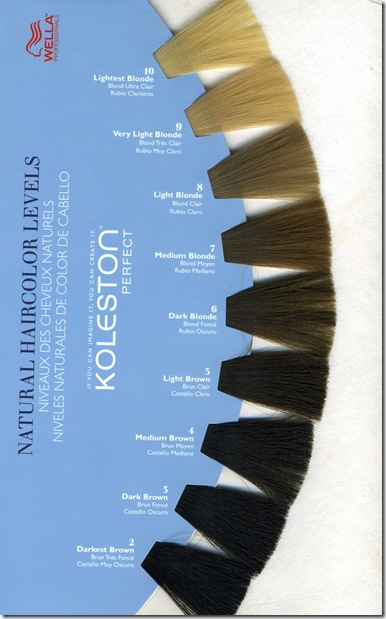
1 - черный
2 - очень темный коричневый
3 - темно-коричневый
4 - средний коричневый
5 - светло-коричневый
6 - темный блонд
7 - средний блонд
8 - светлый блонд
9 - очень светлый блонд 10 - бледный (обесцвеченный) блонд
11-12 - седые или волосы как у альбиносов.
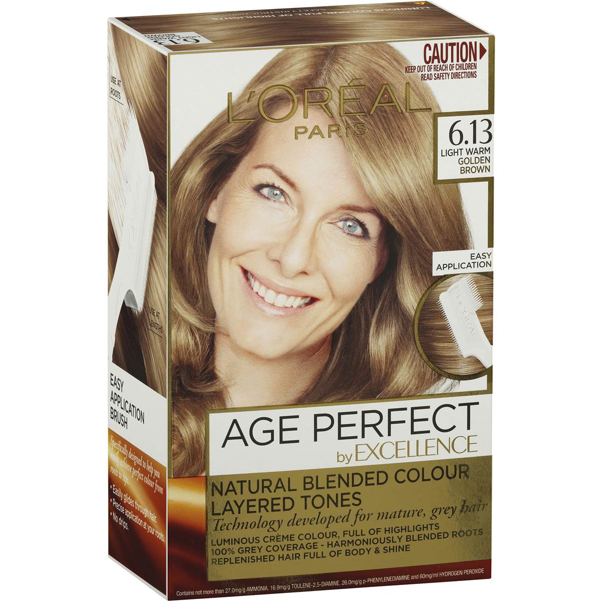
Что еще примечательно, строгого контроля по соответствию названия и номера уровня светлости - нет. К примеру, L’oreal берет и смещает названия уровней светлости на одну единицу (например, 6 - это светлый коричневый, а не темный блонд, и так со всем остальным). И это не только у них встречается. Поэтому ориентируйтесь только на цифры.
Где прячется оттенок? Оттенок дает представление о тепло-холодности краски и на какие цвета сделана ставка (синий, красный, желто-оранжевый и т.п.). Есть основной оттенок и бывает еще дополнительный, который составляет 25-35% от основного оттенка. В коде оттенок - то, что идет после цифры уровня светлости, либо в виде букв (7W), либо в виде цифр после точки (7.14), дроби (7/35). Как ранее уже говорилось, в краске Palette (М7) это первые буквы кода. И здесь тоже путаница та еще: везде по-разному трактуют и буквы, и цифры. Вот международный цветовой чарт (надеюсь, переводить не надо? если надо, пишите в комментариях). Тут логика цифровой последовательности цветов плохо улавливается:
| ICC Number | Tone | Actual Color | Cool or Warm |
|---|---|---|---|
| 0.1 | Blue Ash | Blue | Cool |
| 0.2 | Mauve Ash | Purple | Cool |
| 0.3 | Gold | Yellow | Warm |
| 0.4 | Copper | Orange | Warm |
| 0.5 | Mahogany | Violet Red | Neutral |
| 0.6 | Red | Red | Warm |
| 0.7 | Khaki | Green | Cool |
| 0.8 | Pearl Ash | Cool | |
| 0.9 | Soft Ash | Cool | |
| .0x | - | - | Cool |
| .x0 | - | - | Depends on primary tone |
Далее пример: таблица, где колонка слева с цифровым рядом - это Wella. Логика более-менее хорошо улавливается, т.к. цифровая последовательность основана на последовательности цветов на цветовом круге, кроме 7 и 9 (см. картинку ниже, ссори за качество). Правая же часть таблицы отображает буквенные значения во многих компаниях, и тут тоже с оговорками, к примеру:
- М может трактоваться как матовый (зелёный), либо как махагон (красное дерево), чаще всего второе.
- С - как медный или пепельный, чаще всего первое.
Оранжевым цветом выделен тёплый оттенок
Синим - холодный оттенок
Белым - нейтральный оттенок
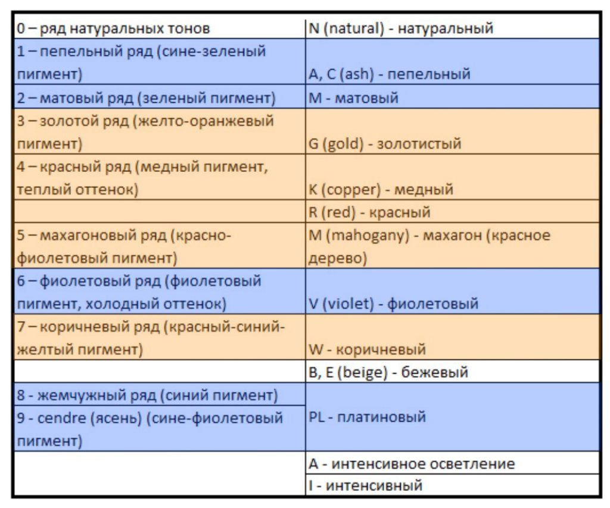
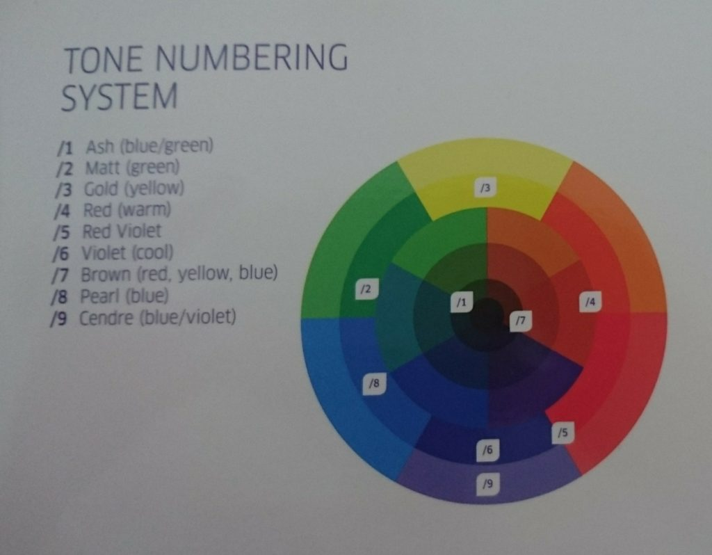
На следующем изображении можно посмотреть на пряди ярких оттенков (без натуральной добавки).
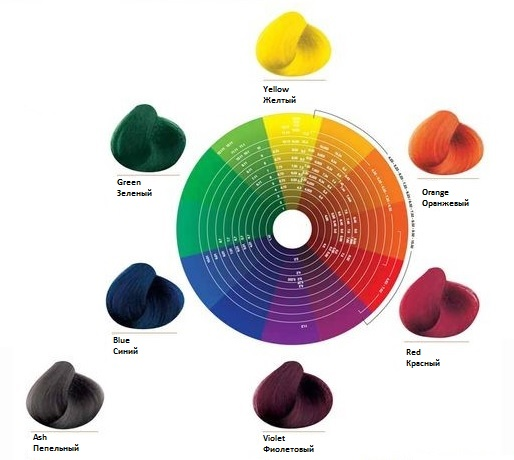
Есть и такая таблица (качество изображения страдает, для четкой картинки можно заглянуть по ссылке):
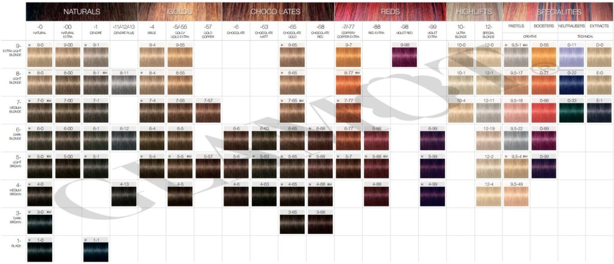
Теперь рассмотрим примеры:
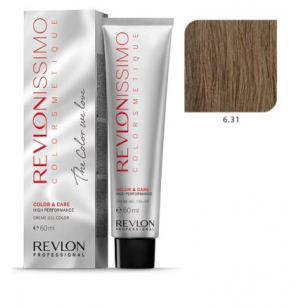
- Краска с кодом 6.31:
- первая цифра говорит об уровне светлости (6 - темный блонд);
- вторая – об основном оттенке (3 - золотой оттенок);
- третья – о дополнительном оттенке (1 - сине-пепельный оттенок).
Получилось: золотистый темный блонд с добавлением пепельного оттенка.
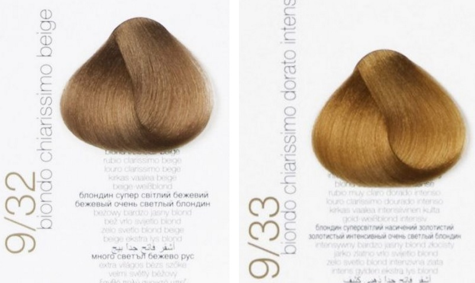
- Еще один пример - 9/32, где:
- уровень светлости - 9 (очень светлый блонд),
- основной оттенок - 3 (золотистый),
- дополнительный оттенок - 2 (фиолетовый).
Вы видите разницу в этих оттенках, очень светлый блонд бежевый и очень светлый блонд золотистый?
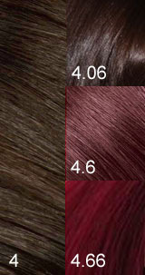
- И еще для тренировки глаз.
Что мы видим? Везде один и тот же уровень светлости - 4 (средний коричневый), тут еще присутствует красный - 6, но в разных количествах, что меняет яркость краски:
- 4 - натуральный цвет, свое родное, с таким цветом родились.
- 4.06 - чутка добавили красного, но основную массу все же составляет натуральный оттенок.
- 4.6 - теперь у нас в красный, как основной оттенок (дополнительным можно считать натуральный).
- 4.66 - красный тут на всех фронтах, про натуральный не слыхали. Полностью искусственный оттенок.
Что еще нужно знать о краске?
Первое, какими они бывают:
- Перманентные красители – агрессивные средства, которые полностью заменяют натуральный пигмент волос.
- Полуперманентные красители – по сравнению с перманентными действуют менее агрессивно, при этом не затрагивают природный оттенок шевелюры.
- Осветляющие красители – их функция осветлить темные локоны, полностью удаляя натуральный пигмент. Очень травмируют волосы, делая их ломкими и сухими. Но это касается старых осветляющих красок (bleach), сейчас в салонах используют новый тип красок, который более эффективный и менее травматичный, чем старый вариант (lift color).
- Оттеночные средства (муссы, тоники) – замечательный вариант для всех, кто желает изменить оттенок на короткое время. Локоны при этом остаются в прежнем состоянии, а окрашиванию подвергается только верхняя оболочка волоса.
- Натуральные красители – с их помощью можно добиться легких оттенков, а локоны при этом еще и подпитаются полезными веществами. К натуральным красителям относят ромашку, хну, чайный лист, басму, шалфей, кофе, луковая шелуха и др.
Второе, определить требуется ли осветление волос и какой процент окислителя должен быть в краске, чтобы достичь нужного результата. Процент окисления в краске составляет от 3 до 12% :
-
Если вы хотите получить более темный цвет или любой оттенок, но в пределах вашего уровня светлоты – используйте 3%-ный окислитель;
-
Если вы хотите осветлить волосы на 1-2 тона – используйте 6%-ный окислитель;
-
Если вы хотите осветлить волосы на 2-3 тона – используйте 9%-ный окислитель;
-
Если вы хотите осветлить волосы на 3-4 тона – используйте 12%-ный проявитель;
-
Если вы хотите осветлить волосы более чем на 4 тона – используйте специальные блондирующие средства, а лучше обращаться сразу к специалистам.
-
Для волос светлого уровня 8-10 (светлые блондины) осветление, как и затемнение, как и добавление оттенка, проблем не вызывает (подойдет низкий процент окислителя до 6% включительно).
-
Для волос среднего уровня 5-7 с затемнением проблем тоже не должно быть (3% окислитель). Но, чтобы получить достаточно светлые оттенки, надо будет предварительно пройти процедуру осветления волос, либо использовать окислитель не ниже 6%. Например, вас привлек вот такой цвет - 8.хх (Светлый блонд), а на текущий момент цвет ваших волос находится на 5 уровне (Светло-коричневый), тогда: либо использовать краску с 9% окислителем, либо осветление на 3 уровня вверх станет первым шагом перед основным окрашиванием.
-
Для волос темного уровня 1-4: брюнетам придется немного попотеть, особенно тем, у кого уровень светлости 1-2 и хочется более светлых оттенков. Если Вы желаете добиться цвета блонд (уровень 8-10), придется осветлять волосы поэтапно и/или применять специальные средства, поэтому подумайте, нужна ли вам такая радикализация?
Нужна ли нейтрализация цвета волос?
Если вы нацелились на краску с холодным оттенком, а у вас сейчас тёплый оттенок волос. Понятно, что без нейтрализации дело не обойдется. Чтобы выбрать нейтрализующий тон, понадобится знания колористики. Вспомним детство, и как мы смешивали краски :)
Для этого используется цветовой круг Иттена (цветовая система Пранга) с первичными, вторичными и третичными цветами, которые делят круг на 12 секторов.
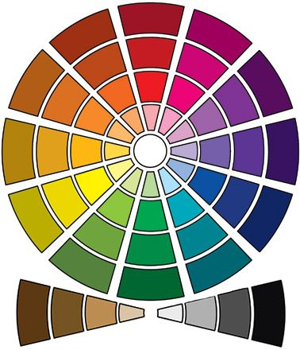
Согласно
теории цвета в своей основе цветовой круг имеет три первичных цвета (синий,
желтый и красный), из которых путем смешения можно получить все остальные
цвета.
Синий является самым сильным из основных цветов и единственным
основным холодным цветом (с точки зрения психологии и физиологии). Его
добавление в любой из цветов может привнести глубину и темноту любому цвету.
Красный — средний по силе воздействия первичный цвет. Его добавление к
цветам на основе синего заставляет их казаться более светлыми. Добавление
красного в цвета на основе желтого делают их более темными.
Желтый самый
слабый из первичных цветов. Его добавление во все цвета придаст им яркость и
светлоту.
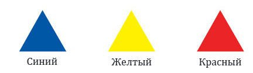
Вторичные цвета образуются путем смешения в равной пропорции двух первичных цветов. Таким образом: желтый с красным дадут в результате оранжевый цвет, красный с синим — фиолетовый, а синий с желтым — зеленый.
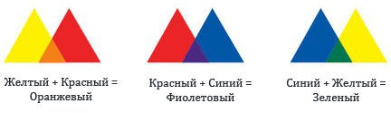
Третичные цвета получают путем смешения в равных пропорциях одного вторичного и одного первичного цвета. Благодаря этому образуются такие цвета, как: желто-оранжевый, красно-оранжевый, красно-фиолетовый, сине-фиолетовый, сине-зеленый и желто-зеленый.
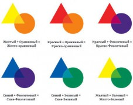
Смешение трех первичных цветов (желтый, синий, красный) в одинаковой пропорции дает образование натурального цвета (нейтрального серо-коричневого или taupe). Происходит нейтрализация цветов. Нейтрализации можно добиться и путем смешивания комплементарных (дополнительных) цветов. Комплементарные цвета - это пара цветов, диаметрально расположенных относительно друг друга на цветовом круге, т.е. они противоположные, например, красный и зеленый. И результатом смешения фиолетового цвета с желтым, красного с зеленым, синего с оранжевым будет нейтральный цвет.
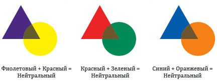
Стоит отметить, что в колористике используют и другой цветовой круг - круг Манселла или дерево Манселла, где основными цветами выступают: желтый, зеленый, синий, фиолетовый и красный; именно они дают ахроматический - чистый серый цвет без примесей. Комплементарные цвета на круге Манселла при смешении в равных пропорциях дают также чистый серый.
Нейтрализация цветов используется при борьбе с нежелательными оттенками на волосах, однако стоит отметить, что на практике никто не добавляет равное количество дополняющего цвета. Добавляются всегда малые количества, которые просто приглушают яркость нежелательного оттенка.
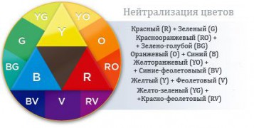
В помощь вам вот такая таблица, где
1 колонка - уровень светлости, 2 - описание уровня светлости, 3 - подтон цвета на данный момент, 4- подтон получаемый при осветлении, 5 - нейтрализующие цвета, 6 - усиление цвета:
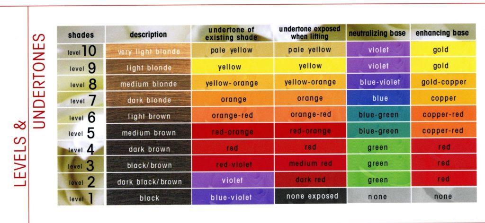
- Как технически окрашивать волосы, закрашивать седину и отросшие корни можно узнать из инструкции к краске, которая есть в каждой упаковке с краской.
- Для тех, кто хочет быть блондинкой, можно почитать еще тут.
- Еще много полезного можно почитать здесь и здесь .
- ну и немного философии: поразмышлять зачем вы красите волосы? какова цель?
Если же Вы не уверены в своем цветотипе, оттенке волос и их состоянии, лучше всего обращаться в салон к профессионалам, где кроме ответов на вопросы, Вы сможете сделать и технически сложное окрашивание. Со специалистами будьте бдительны, и в случае неудачного результата не дайте себя обмануть: «Сложность для России в том, что далеко не все мастера являются действительно Мастерами. Им вот кажется, что они супру научились разводить и кисточкой по волосам водить и сразу все - можно бабки стричь. Поэтому ходят у нас и белые мочалки и желтые блондинки, и зеленые брюнетки и красно-рыжие. А мастер (фломастер) стоит, ручками разводит - как же так, я все сделала по правилам, может у Вас, уважаемый клиент, гормональные изменения? клиент свято верит, что прилично одетая девушка в приличном месте за 200 долларов не может же не уметь, поэтому честно ищет оправдания такой милой девушке - да, может и гормональное. (гормоны, такие гормоны). Это я своими ушами слышала. Главное - что все довольны этим объяснением. И мастер в ус не дует, раз такой гормональный клиент попался (наверное, через одного у нее), и клиент вполне Щастлив, не фиолетовая же, подумаешь - желтая, таких много.
Еще слышала (и не раз), когда растерянно-желтенькой блондинке начинают впаривать заговорщическим шепотом, что де “краска-то не очень на самом деле, но директор на такой только разрешает работать, но я знаю одну краску и одно место, там все очень профессиональное, да-да, самое что ни на есть про-фес-си-о-наль-но-е… и я бы могла вам купить” Мне в такие моменты хочется ответить, чтобы в том самом месте еще бы и мозгов прикупила, или сходила бы куда подучиться.»
Для создания данного поста были использованы материалы из следующих интернет-источников:
pl-yum.livejournal.com
www.haircolour.ru
meduniver.com
haircolor.org.ua
shpilki.net
Картинки для иллюстраций - все, что выдал google по запросам, а также с сайта haircolor.org.ua


{kind=link}